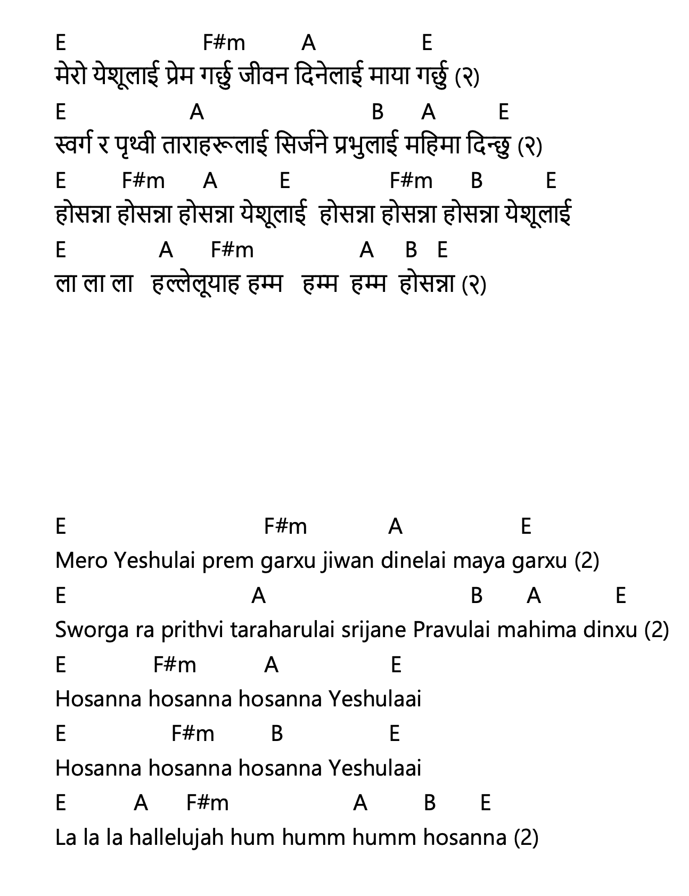

मेरो येशूलाई प्रेम गर्छु – Mero Yeshulaai Prem Garchhu

नेपाली Lyrics (Copyable)
मेरो येशूलाई प्रेम गर्छु जीवन दिनेलाई माया गर्छु (२)
स्वर्ग र पृथ्वी ताराहरूलाई सिर्जने प्रभुलाई महिमा दिन्छु (२)
होसन्ना होसन्ना होसन्ना येशूलाई होसन्ना होसन्ना होसन्ना येशूलाई
ला.....ला.....ला.....हल्लेलूयाह हम्म.....हम्म.....हम्म.....होसन्ना (२)